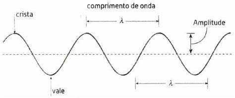

Acustica e Ondulatoria
➤ A acústica é a área da ondulatória responsável pelo estudo do som. A onda acústica é um tipo de onda mecânica muito utilizada por nós, seres humanos, para nos comunicar. Além disso, utilizamos as propriedades e características das ondas sonoras para desenvolver equipamentos extremamente avançados de som, fones de ouvido e até mesmo para exames de ultrassonografia. Esses são apenas alguns dos exemplos de suas aplicações.
➤O fato é que essa belíssima teoria apresenta inúmeras funções na sociedade moderna, o que contribui enormemente para seu desenvolvimento e até mesmo para o avanço da nossa qualidade de vida.
Ondulatória é uma área da Física cujo objeto de estudo está nas características, propriedades e fenômenos ondulatórios.
São períodicas quando há um padrão de oscilação durante um tempo.• São estacionárias quando resultam da sobreposição de ondas de mesma frequência que se movimentam na mesma direção e em sentidos contrários.
• As cristas da onda são os pontos mais superiores da onda.
• Os vales da onda são os pontos mais inferiores da onda.
• O comprimento de onda é o tamanho da onda.
• A amplitude é a altura da onda.
• O período da onda é o tempo que ela demora para completar uma oscilação.
• A frequência da onda é o número de oscilações por unidade de tempo.
• Os fenômenos ondulatórios são: reflexão, refração, absorção, polarização, dispersão, difração, interferência e ressonância.
➾Crista da onda
